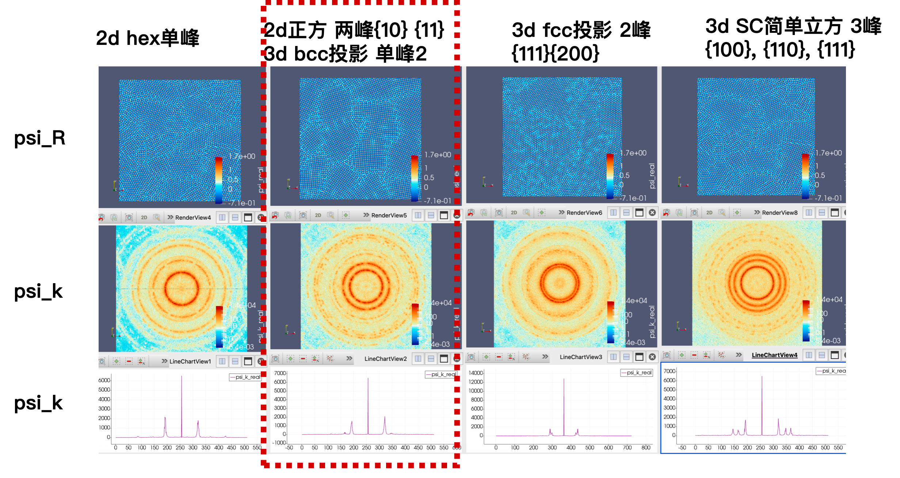
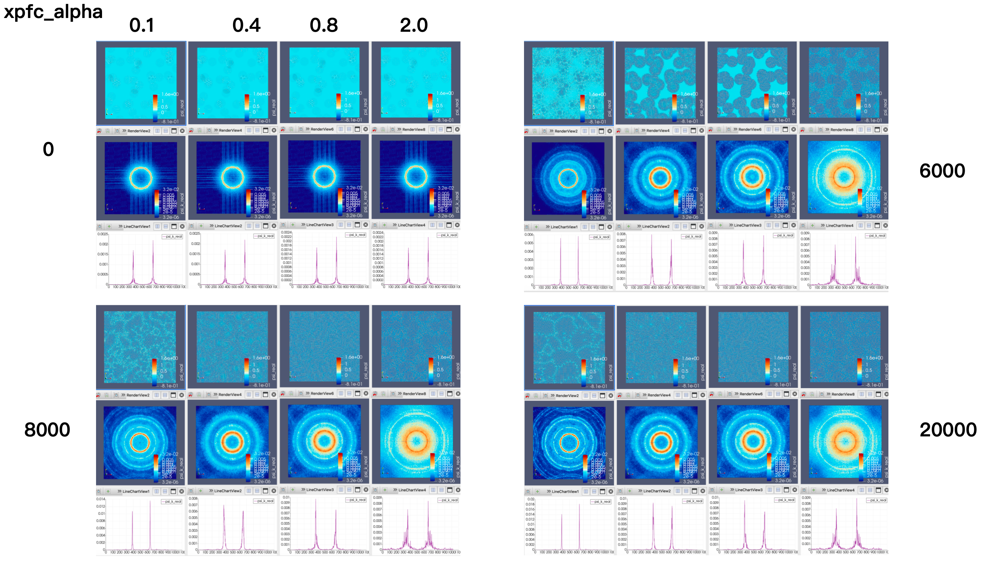

Here is the density deviation, the free energy, and the two-point correlation function. In Fourier space, the convolution becomes multiplication by .

For the reported two-dimensional hexagonal case, the Fourier-space correlation has a Gaussian structural peak and an attenuation factor.
In XPFC, changing the model changes which lattice spacings the free energy favors. The nonlocal term becomes a multiplication by a correlation kernel in Fourier space. I compared density fields, Fourier-space views, and line cuts for different lattice setups and parameter settings. These paired views helped me inspect the solver’s response to the model. The montage pairs density fields with Fourier-space fields and line cuts, including two-dimensional and projected lattice cases.

I also compared the labeled α settings at several stages of polycrystalline evolution. The paired real-space and Fourier-space views made changes in the developing patterns easier to inspect.

Model background · Greenwood, Rottler & Provatas (2011).
Different lattice settings
I compared two-dimensional lattice representations selected by different correlation kernels, including hexagonal, square/BCC-projection, FCC-projection and simple-cubic settings. The Gaussian kernel above is the specific hexagonal example used in the SI, rather than a common kernel for every column.